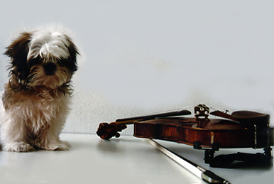

Learning Japanese Using the NACOS Method

The following describes the basic progression you will follow while learning Japanese using the NACOS method. It describes what you can expect to learn in your first week all the way through where you can expect to be after a year or more with us. The following sample is based on lessons two times a week. The pace can be sped up or slowed down, depending on the individual student.
Week 1
Self Portrait
The first thing you will do upon joining the NACOS program is to create a self-portrait. This is a short autobiography or story about yourself. In the self-portrait, you will describe yourself as well as your family background, interests, experiences, education, work, goals, thoughts, or anything else that you think are interesting and want to share with others. If you cannot come up with one on your own, we can help you develop your self-portrait while talking with you and getting to know you.
The self-portrait will be translated into Japanese and be used to help you learn Japanese grammar and vocabulary using words and phrases that are relevant to you.
Mention hiragana and katakana
Japanese sounds and pronunciation practice
a, i, u, e, o
aiueo Hiragana
aiueo Katakana
Basic verbs, nouns, and adjectives
Present tense (-masu, desu)
Levels of politeness
Select and practice useful phrases from self-portrait
Numbers 1–10
Particles
de, ni, o, wa
Week 2
Review and practice
Past tense and negative forms
Speaking practice using your self-portrait
You will practice answering simple questions in the form of, "who," "what," "when," "where," or "why" using information in your self-portrait.
Basic conversation
Numbers 11–100
Years, months, weeks, days
Conversation and listening practice Conversation with a native speaker at normal speed.
Practice getting the main idea, even if you can´t understand everything.
Week 3
Review and practice
Verbs, nouns, and adjectives
Affirmatives, negatives, tense
Adjectives
Adjectives + verbs
Adjectives + nouns
Numbers 100-1000
Set phrases
Write and practice short stories
In addition to the self-portrait, students will continue to write short stories or anecdotes about themselves which will be translated into Japanese and used for instruction and practice. These may be written by the students themselves here at NACOS or submitted via e-mail or blog. We can also write them as we listen to the students tell the stories.
Basic conversation
Beginners will be able to engage in basic, back-and-forth communication by asking and answering questions
Reading and writing hiragana
Week 4
Review and practice talking about oneself
Communication phrases
Basic phrases to help facilitate communication
Time
Hours, minutes, seconds
Numbers 101–10,000
Fast tempo conversation
We will evaluate your progress every eight lessons
Month 2
Review and practice
Polite communication phrases and expressions will become natural.
Useful phrases for various situations: Students will learn useful phrases that they can apply to different situations.
Pronunciation and intonation: Speaking Japanese using natural intonation, tone, and pitch.
Month 3
Review and practice
Polite communication
Useful phrases for various situations
Telling stories and talking about oneself
Students will gain more confidence in expressing themselves and be able to present themselves in a positive manner.
Students will continue to accumulate stories to tell about themselves.
Hiragana and katakana: Beginners will be able to read and write hiragana and katakana.
aiueo Hiragana Katakana
gagigugego Hiragana Katakana
kyakyukyo Hiragana Katakana
Kanji awareness: Students will become able to recognize kanji that consistently appear in their short stories.
Students will be introduced to various kanji combinations.
Speaking with feeling: Students will continue to practice reading their short stories aloud with feeling.
Intonation, rhythm: Intonation, rhythm of speech, and pauses will become more natural.
Month 4–6
Review and practice: Students will continue to refine what they have learned so far.
Using particles naturally: By continuing to practice their short stories, students will become able to use particles naturally.
Useful phrases: Students will increase their repertoire of phrases that are useful for them.
Year 1 Goals
By creating and practicing their short stories, students will get a feel for how to express their thoughts and feelings in various situations.
Enjoy speaking and being able to express oneself in Japanese
Create one´s own short stories
Being able to express oneself
Knowing what to say in different situations
Being able to recognize about 100 kanji and, possibly, start writing kanji
After a year-and-a-half
As students continue with NACOS, they will continue progressing at the same pace until they are able to speak Japanese like a native speaker.
Ongoing
Working to refine your Japanese
| © 1995-2013 NACOS International Institute. All Rights Reserved. |